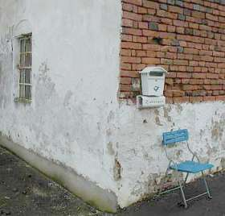

"In den letzten Jahrzehnten hat man immer wieder versucht, feuchtebedingte Mauerwerks- und Putzschäden durch nachträgliche abdichtende Maßnahmen im Horizontal- und Vertikalbereich dauerhaft zu beseitigen.
Dabei mußte man immer wieder feststellen, daß dies nur bedingt möglich ist, da - wie heute allgemein bekannt - viele der sichtbaren Schäden im feuchte- und salzbelasteten Mauerwerk in erster Linie auf die Wirkung von Salzen zurückzuführen sind. Diese lösen sich im Wasser, wandern durch das Mauerwerk und konzentrieren sich dort, wo die günstigsten Verdunstungsbereiche sind. Sie führen dann zu mechanischen Schäden im Putz- und Mauerwerksbereich durch Kristallisations- und Hydratationsvorgaänge auf der einen Seite und zu einer Erhöhung des Feuchtegehalts durch hygroskopische Effekte.
Durch diese hygroskopische Wasseraufnahme wird der Feuchtehaushalt der Wand nachhaltig im ungünstigen Sinne beeinflußt."
5. Bautenschutz und Bausanierung B+B 5/2005: Dr. Dirk Hoffmann, BAM - Bundesanstalt für Materialprüfung, Berlin: "Wie wirksam? Nachträgliche Maßnahmen gegen Feuchtigkeit im Mauerwerk - Verfahren und ihre Ergebnisse in Praxis und Labor
... (nach allerlei widersprüchlichen Ergebnissen verschiedener Bohrlochtränkungsverfahren, als Ergebnis einer Testreihe im Labor mit einem firmenseits angewendeten Injektagemittel unbekannter Zusammensetzung)
Der Mauerausschnitt stand bis zur Installation eines chemischen Verfahrens zwei Jahre im Wasser und hatte zum Zeitpunkt des Versuchsbeginns 43,3 kg Wasser aufgenommen. In der 3. Ziegellage oberhalb des Wasserspiegels (= 4. Lage von unten) sind dann jeweils acht Bohrlöcher eingebracht worden. ...
Diese wurden dann mit einer chemischen Lösung unbekannter Zusammensetzung gefüllt. Da sich innerhalb eines halben Jahres keine Masseabnahme, sondern eine Zunahme von 1,4 kg einstellte, erfolgte durch die Firma nach Einbringen neuer Bohrlöcher eine zweite Injektion in die 4. und 5. Ziegellage oberhalb des Wasserspiegels.
Nach wiederum einem halben Jahr ließ sich auch hier eine Massezunahme um weitere 5 kg feststellen. Auf der Oberfläche der Ziegel und der Fugen hatten sich erhebliche Mengen an Ausblühungen gebildet. Daraufhin wurde der Versuch abgebrochen."
(Erst eine Injektionsmethode nach Ausheizungen reduzierte die Wasserbefrachtung. Das vermag allerdings nicht zu verwundern. Verwundern muß allerdings die "Wasseraufnahme im Mauerkörper. Und verdächtigerweise wird uns im Bericht nichts davon verraten, wie es dem Laboranten gelungen ist, die Porengeometrie des verwendeten Mauermörtels so (praxisfremd) an die der Mauersteine anzupassen, daß eine kapillare Transportleistung im Mauerstein-Mauermörtelsystem überhaupt möglich wurde ...)
6. Leo Pel, Moisture transport in porous building materials, Ph.D. thesis, Eindhoven University of Technology, the Netherlands (1995)
"Moisture Transport Across Brick/Mortar Interface"
Holländische Bauforschung um Dr.ir. Leo Pel, Eindhoven University of Technology, Department of Physics, Centre for Material Research with Magnetic Resonance, Transport in Permeable Media, verwendet - typisch Wissenschaft - in der Baupraxis vollkommen unbrauchbare Mörtel mit extrem geringem Luftporengehalt und Porenvolumen, um zumindest minimale Transportvorgänge aus dem Ziegelstein in den Versuchsmörtel zu erzwingen - trotzdem eine Bestätigung des normalerweise unendlich hohen Kapillarwiderstands zwischen Stein und baustellenüblichem bzw. historisch gebräuchlichem porenreichem Kalkmörtel. Zitat zum Wassertransport zwischen Ziegelstein und Mörtel und umgekehrt:
"In the case of absorption from brick to mortar, moisture profiles start to develop in the mortar when the water reaches the interface. Since the mortar
absorbs water rather slowly, the brick is quickly saturated up to its capillary moisture content. In the case of absorption from mortar to brick, the water is
quickly absorbed by the brick when it reaches the interface, and after a few hours an almost stationary moisture profile develops in the mortar."
(Beim Feuchtetransport vom Ziegel in den Mörtel wird der Feuchtegehalt des Mörtels ansteigen, wenn das Wasser die Materialgrenzfläche zwischen Ziegel und Mörtel
erreicht. Da der Mörtel das Wasser ziemlich langsam aufsaugt, werden die Ziegelporen schnell mit Feuchte gesättigt sein. Bei der Feuchteaufnahme aus dem Mörtel
in den Ziegel wird das Wasser schnell im Ziegel aufgesaugt, wenn es die Materialgrenzfläche erreicht, und nach ein paar Stunden entsteht ein nahezu
gleichbleibender Feuchtigkeitsgehalt im Mörtel. - Übers. K.F.)
(Auf der angelinkten Webseite Grafiken, die den stark verminderten Transport vom Stein in den Labormörtel verdeutlichen)
7. Heinrich Schmitt: Hochbaukonstruktion, Die Bauteile und das Baugefüge, Grundlagen des heutigen Bauens, Fünfte Auflage 1974, S. 34.
8. Der Maueraussatz im 3. Buch Mose (Leviticus) Kapitel 14, Vers 33-54 nach der Übersetzung von Dr. Martin Luther (1545)
"33 Und der HERR redete mit Mose und Aaron und sprach:
34 Wenn ihr in das Land Kanaan kommt, das ich euch zur Besitzung gebe, und ich werde irgend in einem Hause eurer Besitzung ein Aussatzmal geben,
35 so soll der kommen, des das Haus ist, es dem Priester ansagen und sprechen: Es sieht mich an, als sei ein Aussatzmal an meinem Hause.
36 Da soll der Priester heißen, daß sie das Haus ausräumen, ehe denn der Priester hineingeht, das Mal zu besehen, auf daß nicht unrein werde alles, was im Hause
ist; darnach soll der Priester hineingehen, das Haus zu besehen.
37 Wenn er nun das Mal besieht und findet, daß an der Wand des Hauses grünliche oder rötliche Grüblein sind und ihr Ansehen tiefer denn sonst die Wand ist,
38 so soll er aus dem Hause zur Tür herausgehen und das Haus sieben Tage verschließen.
39 Und wenn er am siebenten Tage wiederkommt und sieht, daß das Mal weitergefressen hat an des Hauses Wand,
40 so soll er die Steine heißen ausbrechen, darin das Mal ist, und hinaus vor die Stadt an einen unreinen Ort werfen.
41 Und das Haus soll man inwendig ringsherum schaben und die abgeschabte Tünche hinaus vor die Stadt an einen unreinen Ort schütten
42 und andere Steine nehmen und an jener Statt tun und andern Lehm nehmen und das Haus bewerfen.
43 Wenn das Mal wiederkommt und ausbricht am Hause, nachdem man die Steine ausgerissen und das Haus anders beworfen hat,
44 so soll der Priester hineingehen. Und wenn er sieht, daß das Mal weitergefressen hat am Hause, so ist's gewiß ein fressender Aussatz am Hause, und es ist
unrein.
45 Darum soll man das Haus abbrechen, Steine und Holz und alle Tünche am Hause, und soll's hinausführen vor die Stadt an einen unreinen Ort.
46 Und wer in das Haus geht, solange es verschlossen ist, der ist unrein bis an den Abend.
47 Und wer darin liegt oder darin ißt, der soll seine Kleider waschen.
48 Wo aber der Priester, wenn er hineingeht, sieht, daß dies Mal nicht weiter am Haus gefressen hat, nachdem das Haus beworfen ist, so soll er's rein sprechen;
denn das Mal ist heil geworden.
49 Und soll zum Sündopfer für das Haus nehmen zwei Vögel, Zedernholz und scharlachfarbene Wolle und Isop,
50 und den einen Vogel schlachten in ein irdenes Gefäß über frischem Wasser.
51 Und soll nehmen das Zedernholz, die scharlachfarbene Wolle, den Isop und den lebendigen Vogel, und in des geschlachteten Vogels Blut und in das frische
Wasser tauchen, und das Haus siebenmal besprengen.
52 Und soll also das Haus entsündigen mit dem Blut des Vogels und mit dem frischen Wasser, mit dem lebendigen Vogel, mit dem Zedernholz, mit Isop und mit
scharlachfarbener Wolle.
53 Und soll den lebendigen Vogel lassen hinaus vor die Stadt ins freie Feld fliegen, und das Haus versöhnen, so ist's rein.
54 Das ist das Gesetz über allerlei Mal des Aussatzes und Grindes,
55 über den Aussatz der Kleider und der Häuser,
56 über Beulen, Ausschlag und Eiterweiß,
57 auf daß man wisse, wann etwas unrein oder rein ist. Das ist das Gesetz vom Aussatz."
 Zum Abschluß:
Zum Abschluß:
Da die Saniervertreter bzw. ihre "Merkblätter" zu Injektions- und Dichtungspampen auch gerne noch Sanierputz als "flankierende", ein Dr.-Ing. Helmut Künzel sogar als alleinig ausreichende Maßnahme vorschlagen/vorschreiben, empfehle ich auch die kritische Durchleuchtung dieser Wunderwaffe, z.B. durch Drücken dieses fabelhaft weggeschwarteten Sanierputz-Bildleins. Und den Feuchteexperten, die mit schwachverständigen Schlechtachten zu den Vorzügen und Nachteilen verschiedenster Trockenlegungsmethoden bei Bautölpeln hausieren gehen, ohne die hier vorgetragenen Argumente gegen sinnlose Versuche darzustellen, sei geweissagt: Das geht dermaleinstens bis bald schief und die angespreizte Reputation schwindet dann dahin.
Nachschlag 1:
Ein Fund zur amtlich vorgeschreibenen Schweinehaltung in Wohnungen in Frank-Dietrich Jacob, Evamaria Engel: Städtisches Leben im Mittelalter, Schriftquellen und Bildzeugnisse, Böhlau 2006:
"Der Rat ist übereingekommen und gebietet, weil etliche Leute ihre Schweine in der Stadt aufziehen und auf den Straßen
umherlaufen lassen und dadurch anderen Leuten Schaden zufügen, daß jedermann, der Schweine aufziehen will, diese nach dem
nächsten Allerheiligenfest [1. November] in seinem Haus oder Hof oder in seiner Wohnung halte und sie nicht in der Stadt umherlaufen
lasse, es sei denn, man wolle sie zum Wasser, zur Tränke oder zum Hirten oder aufs Feld treiben. Das kann man tun, aber man soll sie
dann möglichst schnell durch die Gassen treiben.
Wenn man danach noch Schweine, junge oder oder alte in den Gassen vorfindet, es wäre am Tage oder in der Nacht, so hat der Rat
bestimmt, daß die Scharwächter nachts und der Stockmeister am Tage bei ihrem Eide die Schweine ausnahmslos eintreiben sollen. Und
man soll von jedem Schwein, klein oder groß, 1 Schilling Heller Strafe nehmen.
30. September 1421, Verordnung des Rates der Stadt Frankfurt am Main, in: Armin Wolf, Nr. 186, S. 276 f."
Nachschlag 2:
In einem gülleverseuchten Haus gefunden: "Markt und Kloster Sonnefeld, Eine Heimatkunde von Oberlehrer Herrmann Wank, Sonnefeld 1925, Gedruckt in der Buchdruckerei von A. Roßteutscher in Coburg, Kapitel "Die Bevölkerung Hofstädtens im 18. Jahrhundert", Seite 108":
"Die Reinlichkeit ist unter diesem Himmelstrich nicht zu Hause. ... Wenn z. B. ein neuer Fußboden in die Stube gelegt wird, so werden die Bretter nicht gehobelt, und nun kann dieser Fußboden 30, 40, 50 Jahre liegen, ohne ein einzigesmal gewaschen oder nur mit Sand bestreut zu werden. Von diesem Umstande kann der Leser sicher auf alle anderen Reinlichkeitsartikel fortschließen, und sich dabei noch die Bemerkung gemacht sein lassen, daß in einer solchen Stube im Frühjahr neben der Menschenfamilie auch noch junge Schweine, Gänse, Hühner, junge Ziegenböcke, Lämmer, auch wohl Kälber, mit allen Exkrementen 4, 5, 6 Wochen zu Hause sind, welche Bevölkerung mit dem Brudel aus 2 Ofenblasen eine solche injuriöse Ausdünstung verursacht, daß es ein nicht Gewohnter kaum aushalten kann. Ländlich, sittlich! Doch ist keine Regel ohne Ausnahme."
1663, also etwas nach Mitte des 17. Jahrhunderts, sah der niederländische Maler Jan Steen ein fast vergleichbares Idyll bei vornehmenAktuell ergänzend:
Darf man ein Hausschwein in der Wohnung halten?
Forum Schweinefreunde - Die krasse Fan-Seite für die Haussau!
Gerichtlich gem, BGB §§ 535, 550, 242 erlaubte
Schweinehaltung in einer Mietwohnung in Köpenick
Nutzviehhaltung in, an und um Wohnungen
Schweine und Schweinehaltung in Entwicklungsländern (Kraß!)
Schweinehaltung / Minischweine in der deutschen Wohnung - Tipps und Tricks
Hausschweinhaltung total in Konstanzer Wohnung
Nachschlag 3:
Zum historischen Hintergrund der Salzbelastung am Bauwerk schreibt Otto Krätz in der SZ am Wochenende, 10.11.01 (S. I):
"Drastisch beschreibt der Technologe F. Knapp 1847 die unter den damals recht großzügigen hygienischen Bedingungen allenthalben zu entdeckende Salpeterbildung.
"In stark bevölkerten Städten in engen Straßen, wo sich die Exkremente der Zugtiere, der Abfall der Schlächtereien, Spülwasser aus den Häusern, Abfälle von den Märkten, wo man Fleisch, Geflügel, Fische und andere Nahrungsmittel verkauft werden, wo sich diese und viele derartige Dinge mit dem flüssigen Inhalt der Gossen vermischen und in fortwährender Fäulnis bgriffen sind, sieht man,wie der Mörtelverputz an dem Fuße der Außenmauern nach und nach zerfressen wird und sich mit schneeartigen, weißen, kristallinigen Ausblühungen bedeckt und "Salpeterfraß" genannt wird."
Noch im 18. Jahrhundert nutzte die kurbayerische Armee den besonders reichlichen Mauersalpeter der jaucheumspülten und meist nicht unterkellerten Bauernhäuser. Von Soldaten geschützte Abgesandte der Salpeterkommission überfielen im Morgengrauen wehrlose Gehöfte, rissen die Bodendielen heraus und kratzten den Salpeter ab. Die Bauern [...] setzten mit Unterstützung der Kirche durch, dass zumindest jener Teil der Wohnstube, der der religiösen Andacht diente, verschont blieb. Durch demonstrative und reichliche Anordnung von Herrgottswinkeln, Hausaltären und Heiligenbildern konnte man die Salpeterkommission aushebeln. Diese Schlitzohrigkeit begründete den bis heute anhaltenden Ruf tiefer Frömmigkeit des bayerischen Landvolks."
Mir boarischen Engel, mir san scho Hünd ... so etwa könnts ausgsehn ham, was die Saliterer narrisch machte:

.
Nachtrag 4:
Karl-Heinz Rothenberger: Die Hungerjahre nach dem Zweiten Weltkrieg am Beispiel von Rheinland-Pfalz, Kriegsende und Neubeginn. Westdeutschland und Luxemburg zwischen 1944 und 1947, 7. Alzeyer Kolloquium 1995. Hrsg. von Kurt Düwell und Michael Matheus. Stuttgart 1997, "Geschichtliche Landeskunde", Band 46, https://www.regionalgeschichte.net/bibliothek/texte/aufsaetze/rothenberger-hungerjahre.html:
Und hier noch thematisch zur oben angeführten Kritik an der bösen Normenreiterei passende Auszüge aus einem bemerkenswert kritischen Fachartikel in ARCONIS 1/02, Dietrich Hinz: PE-Folien in Fußbodenkonstruktionen gegen Erdreich bei reiner Bodenfeuchte (hat`s vielleicht zu lange in die Baugrube geregnet, liegt sie im Hochmoor oder Torfsumpf, liegt da gar ein artesischer Brunnen vor? - Sachen gibt`s, die gibt`s gar net! Dafür machen schlechtberatene Bauherren gerne selbst ihre Bude naß - durch den Einbau von Unterböden aus Beton. Wieviel Jahrzehnte daraus die unheimlichen Feuchtemengen herauskriechen, wie so eine brutale Betonplatte sich erst böse wölbt (wenn sie oberseitig abtrocknet), um danach (wenn die Restfeuchte nach Einbau Bodenbelag dann nach oben stößt und sich dort staut) heimtückisch zu schüsseln, und um dann zu schlechter Letzt den Oberboden nach besten und geradezu unheimlichen Kräften zu beschädigen) fragt sich so ein Bauherr lieber nicht! Dabei gäbe es so schön bewährte Lösungen in Trockenbauweise ...):
"[...] In vielen Details werden - praxisgerecht - PE-Folien ohne zusätzliche Abdichtungsbahnen [unter Beton-Kellerbodenplatten] angegeben. Wird jedoch keine zusätzliche Abdichtungsbahn [ein Muß gem. DIN 18195-4:2000-08/1.4/ Ziffer 6.2.1 Satz 1] vorgesehen, werden Tausende von m² Gebäudegrundflächen nicht regelgerecht gebaut, weil im Sinne der Norm die Bodenplatten nicht gegen Bodenfeuchte abgedichtet sind. Deshalb müssen diese Konstruktionen jedoch nicht zwangsweise mangelhaft sein.
Jener Mangelbegriff, der sich bei fehlerfreier Ausführung ausschliesslich auf einen Verstoss gegen die allgemein anerkannten Regeln der Technik (a.a.R.d.T.) beruft, ist zunehmender Kritik unterworfen.
Würde die Neufassung der Norm alles Erforderliche zum Schutz vor Schäden aus Wasserbelastungen enthalten, was zum Stand der Herausgabe technisch richtig und in der Praxis erprobt ist, so müsste die ganze Republik mit Baumängels wegen fehlender wirksamer Abdichtung überschüttet sein. Nachdem dies jedoch nicht der Fall ist, muss hinterfragt werden, weshalb eine Vielzahl von Gebäuden mit PE-Folien als einzige untere Trenn- und Abdichtungslage ohne Schäden sind.
Zwischenfrage KF: Vielleicht ist der Boden gar net so feucht, wie viele annehmen?
Leider sind auch viele Gutachten bekannt, die alleine das Fehlen einer DIN-gerechten Abdichtung mit Bitumen-, PVC- oder Kunststoffbahnen zum Baumangel erklärten, weil nicht normgerecht gebaut worden sei. Für diese Gutachter bedeutete dieser Sachverhalt, dass sie keine weiteren Anstrengungen unternahmen, um nach der eigentlichen Ursache der aufgetretenen Schäden zu forschen.
Der betroffene Unternehmer wurde allein aus diesem Grunde ohne Einschränkung zur Mangelbeseitigung verurteilt, weshalb eine Vielzahl von Bodenplatten unsinniger Weise herausgerissen und neu errichtet werden mussten. Die Verhältnismässigkeit der Mangelbeseitigung trotz hoher Kosten wurde damit begründet, dass nur der Abbruch und die Neuerrichtung mit regelrechter Abdichtung zum Erfolg der Mangelfreiheit führen könne.
[Es wird richtigerweise weiter ausgeführt, daß die normgemäß vorausgesetzten Feuchtelasten gar nicht vorliegen bzw. nicht zwangsläufig so vorliegen müssen oder können, daß daraus eine [KF: in Anbetracht der Realität geradezu widersinnige] Muß-Forderung abzuleiten ist]
Fazit: [...]
- Der vielfach geäusserte Verdacht, dass Lobbyisten die fachlichen Aussagen von DIN - Normen verfälschen, kann auch in diesem Fall leider nicht entkräftet werden. Die Notwendigkeit der mit masslosen Kosten belasteten Beschaffung des Regelwerks DIN 18195 sollte kritisch überprüft werden. Zu den allgemein anerkannten Regeln der Technik kann dieses Regelwerk wohl nicht gerechnet werden."
Wie wahr! Solch normverliebte Schwachverständige kenne ich sogar persönlich. Adresse auf Anfrage. Und noch eins:
Nach all diesen zitatgestützten Ausführungen dürfte wohl klar geworden sein, daß eine "Horizontalisolierung gegen die aufsteigende Feuchte" auch inkl. einer
"Flankierenden Maßnahme - Sanierputz" schon lange nicht mehr zu den "allgemein anerkannten Regeln der Technik - a.a.R.d.T." gehören kann. Vor
allem Dank Praxis, Forschung und Wissenschaft. Wacker, Fraunhofer und Uni Wismar sei Dank.
Zuguterletzt - das Ergebnis einer telefonischen Bauberatung: